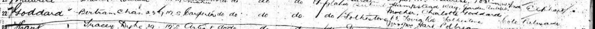
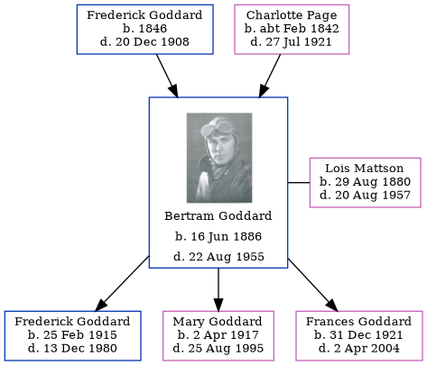

Bertram Charles Goddard 1886 - 1955
[ Home ] | [ Calendar ] | [ Surnames Index ] | [ Errors ] | [ Family History ]A telegraph messenger and the child of Frederick Goddard (a plumber's labourer) and Charlotte Page (a laundress), Bertram Goddard, the second cousin twice-removed on the father's side of Nigel Horne, was born in Folkestone, Kent, England on 16 Jun 18861,2,3,4, was baptised there at St John The Baptist on 25 Jul 1886 and married Lois Mattson (with whom he had 3 children: Frederick Guy Charles, Mary Idabelle and Frances Ellen) in Cedaredge, Delta, Colorado, USA on 11 Apr 19146.
During his life, he was living at 65 Foord Road in Folkestone on 5 Apr 18911 and on 31 Mar 19018; in Montrose, Colorado, USA on 1 Jan 19203; and in Olathe, Colorado on 1 Apr 19309. In 1910 he travelled from Southampton, Hampshire, England (SS Adriatic) to New York, New York, USA, departing on 20 Apr, arriving later that same year.
He died on 22 Aug 1955 in Colorado4,5 and was buried at Olathe Cemetery, Olathe, Colorado after 22 Aug 19557.
Parents
- Frederick Steed was born in 1846
- Charlotte Ann was born c. Feb 1842
Children
- Frederick Guy Charles was born on 25 Feb 1915
- Mary Idabelle was born on 2 Apr 1917
- Frances Ellen was born on 31 Dec 1921
Citations
- 1891 England, Wales & Scotland Census - Findmypast (was age 7 and the son of the head of the household)
- England & Wales births 1837-2006 - Findmypast
- US Census 1920 - Findmypast (was age 33 and the head of the household)
- United States Billion Graves index - Findmypast
- United States Obituary Notices - Findmypast
- United States Marriages - Findmypast
- https://www.findagrave.com/memorial/27892034/bertram-charles-goddard
- 1901 England, Wales & Scotland Census - Findmypast (was age 14 and the son of the head of the household)
- US Census 1930 - Findmypast (was age 44 and the head of the household)
Media
Bertram Charles Goddard
Bertram Goddard - Lois Mattson - Marriage Report

SS Adriatic Manifest

1891 England, Wales & Scotland Census - GBC/1891/0006012128
England Births & Baptisms 1538-1975 - R_884235783
United States Marriages - US/FS/M/000532499/1
United States Obituary Notices - US/TRIB/100273717
United States Billion Graves index - US/BMD/BILLION/008381339
US Census 1920 - USC/1920/004964350/00618/069
Family Tree
Map
Generated by ged2site. Last updated on Jul 3, 2024
Known Issues
Adding date of burial as 'aft 22 Aug 1955'